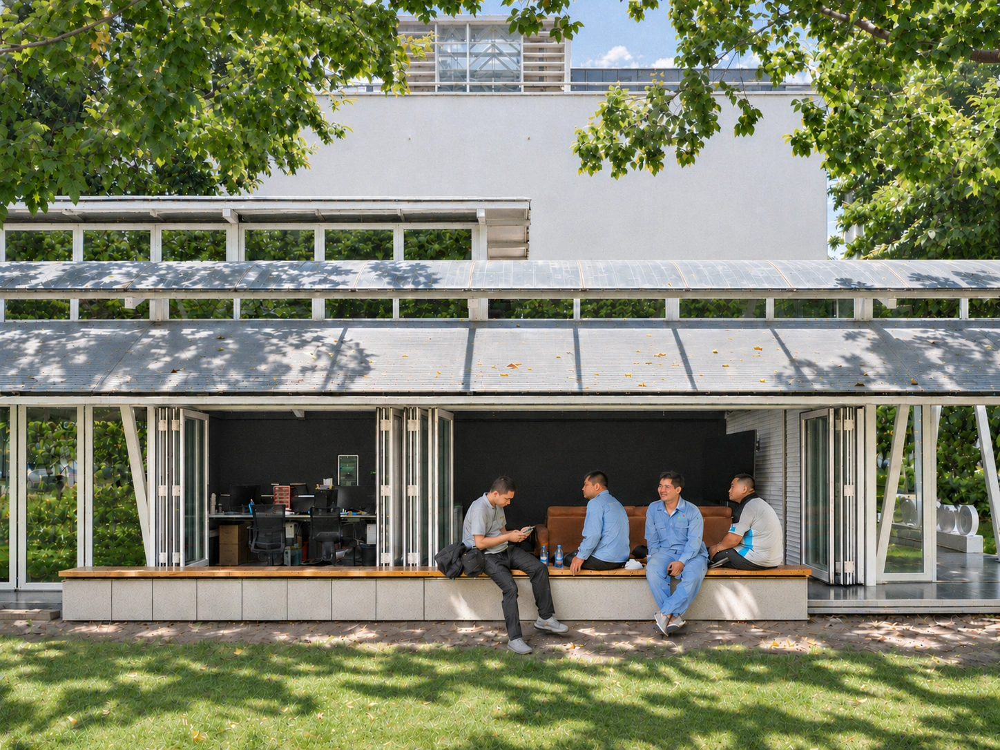
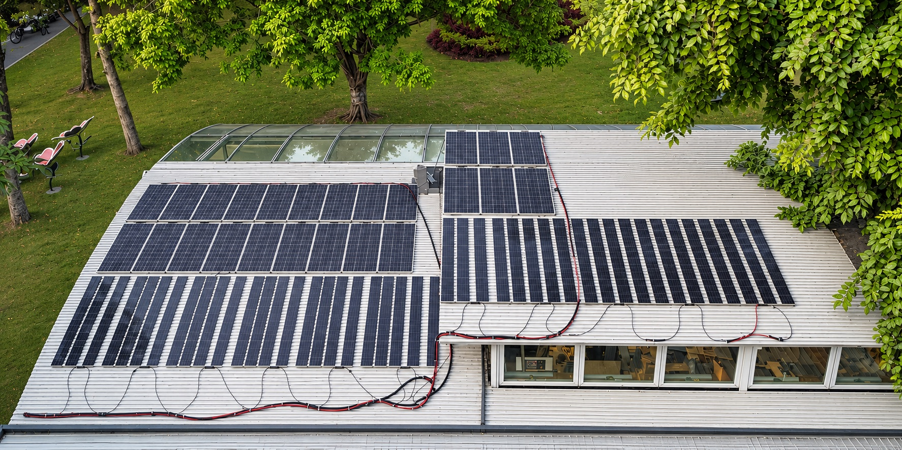
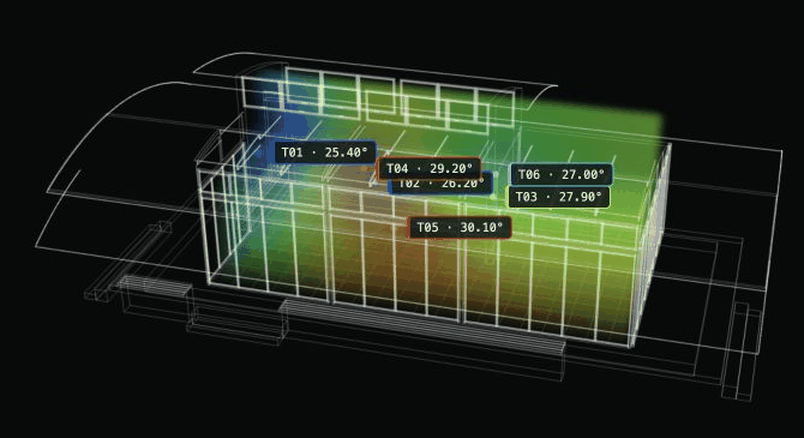
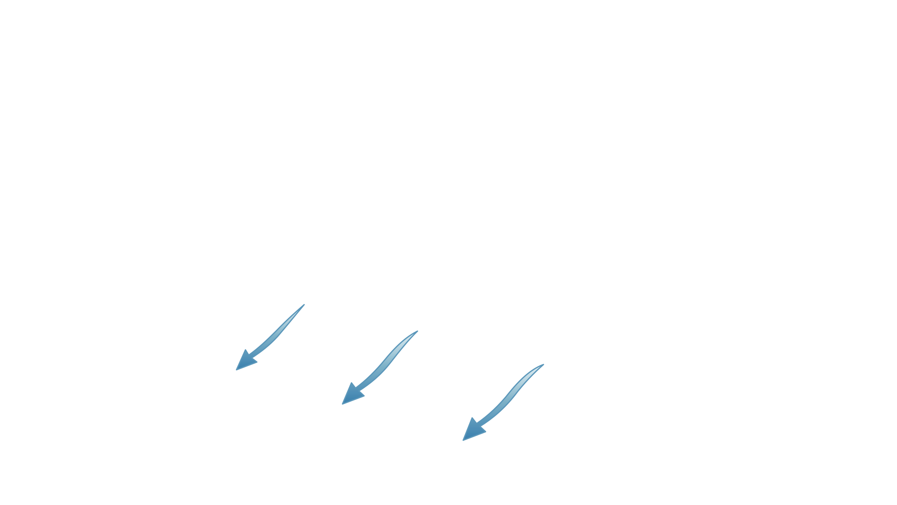
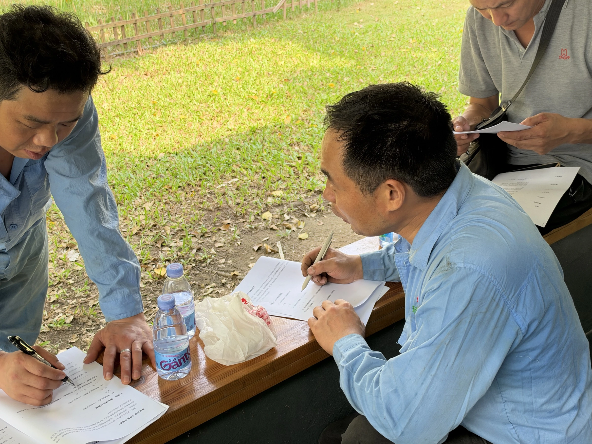
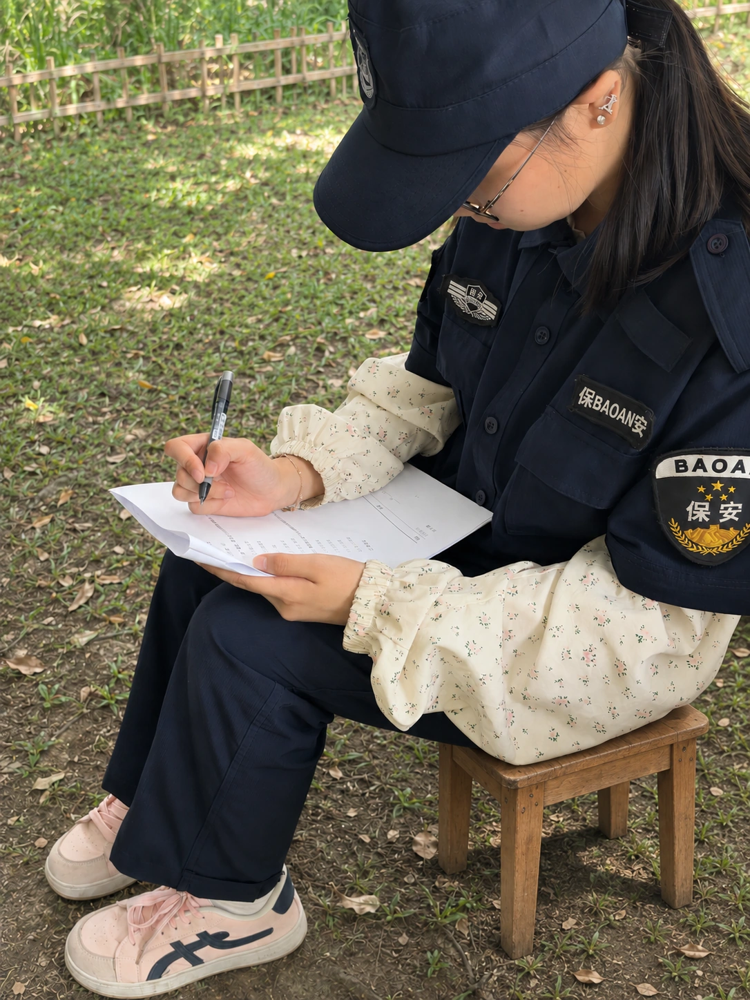

Power here.
Break elsewhere.供能在这里，
休息机会在别处。
A roof can produce energy while a worker still lacks a cool room they can reach and enter during a short break.屋顶可以发电，但工人短暂休息时，仍可能缺少能抵达、能进入的凉爽空间。
EARLY-STAGE CLIMATE ADAPTATION PROTOTYPE早期气候适应原型探索
On hot, sunny days, solar availability and outdoor workers' need for shade, cooling and rest overlap across part of the working day. Yet energy-producing buildings are not necessarily places workers can enter. CoolingPoint tests how everyday shared spaces can switch into accessible heat-recovery points, with PV and storage supporting the service when available and verified.晴热天气中，日间光伏供能机会与户外工作者需要遮阳、降温和休息的时段部分重叠，但能源所在建筑未必是工人能够进入的场所。CoolingPoint 探索让日常共享空间按需切换为可进入的热恢复点，并在光伏及储能供能条件得到核实时由其支持服务。
An initial field trial included post-use feedback from outdoor workers

Hot, humid weather makes it harder to shed heat. City guidance recommends avoiding the 11:00–15:00 heat where possible and taking short breaks in shade or a cool room. Finding that relief near a worksite remains an access challenge.高温高湿使人体更难散热。深圳市卫健委建议尽可能避开 11:00–15:00 的高温时段，并在阴凉处或凉爽房间短暂休息。工作地点附近能否获得这样的空间，仍是关键问题。
Daylight energy and heat exposure overlap in time. The missing link is a room workers can reach and enter when a break becomes possible.日间能源与高温暴露在时间上重叠。缺少的是工人能在休息机会出现时抵达并进入的空间。
Paired solar irradiance and outdoor temperature data from the past five days.这是近五天的太阳辐射与室外气温耦合数据。
82.5%of the 40 plotted entry times fall within the 11:00–15:00 window.的 40 个图示进入时间点落在 11:00–15:00 时段。
Plotted entry times represent cumulative entries during the trial run.图示进入时间点代表试运行期间的累计进入次数。
A roof can produce energy while a worker still lacks a cool room they can reach and enter during a short break.屋顶可以发电，但工人短暂休息时，仍可能缺少能抵达、能进入的凉爽空间。
With host permission, a shared room on the route opens when needed, with shade, suitable cooling and a seat ready.经场地方许可后，工作路线旁的共享空间按需开放，并准备好遮阳、适宜降温和座位。
A campus illustration shows workers and their work routes, then reveals nearby buildings and highlights the solar house as a place to rest.园区示意图先展示工人与工作路线，再呈现周边建筑，并突出阳光房这一休息空间的位置。
Interviews with cleaners, grounds crews and construction workers reveal work routes, break times and entry barriers.对保洁、园林养护及施工人员的访谈，帮助我们了解工作路线、休息时间和进入空间的障碍。
“For us, just having a shade canopy would be great.”“对我们来说，有个遮阳棚就挺好。”
Translated from the original Chinese interview.受访工人访谈原话。
“The shade helps, but I still need somewhere cool to sit down.”“遮阳有帮助，但我还需要一个凉快、能坐下来的地方。”
Translated from the original Chinese interview.译自中文访谈原文。
“If I can see that the door is open, I know I am welcome to take a break.”“如果能看到门是开着的，我就知道自己可以进去休息。”
Translated from the original Chinese interview.译自中文访谈原文。
THREE ESSENTIALS WHEN A BREAK BECOMES POSSIBLE休息机会出现时，需要的三项基础条件
A place to cool down after working in the heat.在高温作业后，有一处可以降温的地方。
Protection from direct sun near the worksite.在工作地点附近避开阳光直晒。
A seat in a space workers can actually enter.有座位，也能真正进入和停留。
PRE-USE QUESTIONNAIRE使用前问卷
COOLER CONDITIONS更凉爽的环境100%Wanted a cooler work environment希望工作环境更凉爽
EXISTING SHADE现有遮阴处100%Usually rested under trees or covered walkways通常在树荫或廊道休息
SEATING + SHADE座椅＋遮阳80%Valid rankings placed this combined option first有效排序将这一合并选项列为首位
A proposed sensing-and-control loop prepares everyday spaces for shade, cooling and rest when outdoor workers need a break.通过拟议的感知与控制闭环，在户外工作者需要休息时，让日常空间提供遮阳、降温与休息服务。

The rooftop PV system is operating and generating electricity.屋顶光伏系统已投入运行，正在发电。

Animated six-point spatial heatmap model of the existing solar room.现有阳光房六点空间热力图模型动图。

Our goal is to bring accessible heat relief to every campus, community and other setting where it is needed. Each future site must meet the three access checks below.我们的目标是让每一个有需求的园区、社区及其他场所，都能提供可及的避暑与休息服务。每个未来场地都需满足以下三项可及性检查。
Check routes and walking time with the worker groups at this site; an unscheduled break may be brief.与这三类目标工人核实工作路线及步行时间；临时休息可能很短。
Agree entry permissions and safety limits with the host; the system can then assess each possible mode change within them.与场地方明确进入权限和安全边界；系统再在这些规则内判断是否适合切换模式。
Make the entrance and current open status visible, with shade and seating available in rest mode.让入口与当前开放状态清晰可见，并在休息模式下提供遮阳和座位。
Early feedback comes from the existing room. Future sites will follow real work routes and host-approved access: use an existing room first, then consider a light retrofit or small unit where needed.初步反馈来自现有空间。下一阶段将依据真实工作路线和场地开放许可选址：优先使用已有房间，必要时再考虑轻量改造或小型独立单元。


Our first pilot site welcomed twelve outdoor workers to cool down and rest in its first week. Post-use feedback shows high satisfaction with cooling and strong interest in returning.首个试点在第一周便迎来了 12 位户外工作者，在这里降温与休息。使用后反馈传递出积极信号：降温体验满意度高，再次使用意愿强。
Post-use questionnaire · self-reported experience使用后问卷 · 主观体验反馈
THE QUESTION WE ARE TESTING我们正在验证的问题